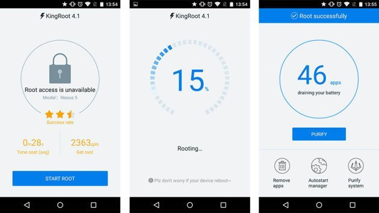

我用 KingRoot 把三年没动过的老手机救活了
手里那台用了三年的安卓机越用越卡，运营商预装的全家桶删不掉。装了 KingRoot 之后一顿操作猛如虎，体验到底是真香还是翻车？
那台旧小米放在抽屉里已经两年多没碰过了。去年过年翻出来想给家里老人用，一开机好家伙——运营商营业厅、云盘、推送服务加上小米自家的浏览器和应用商店，满满一屏图标，后台还在偷偷跑。设置里点进去想卸载，全是灰色的"禁用"按钮，删不掉。
这不是我第一次遇到这种情况，但之前每次都嫌麻烦放弃了。这次老人明确说想要一台干净的手机，我才重新把 root 这件事提上日程。选来选去挑了这款官网主推的工具——理由很朴素：一键 root，手机端直接装，不用找电脑。说实话我对这类工具的印象一直是"噱头大于实际"，但这次算是被打脸了。
初印象：11MB 的小 APK 居然真能搞定
安装过程出乎意料地顺利。先是在设置里打开未知来源，然后浏览器从下载下好 APK 点安装，跟装任何第三方 App 没区别。首次启动需要连 Wi-Fi——它要去云端匹配我这台机型的 root 方案，没网的话只能看到一个好看的启动页。
主界面简单到有点简陋：一个大按钮写着"尝试 root"，下面是一行小字显示当前设备型号。我习惯性地点了一下，进度条开始走。
说实话我当时没抱太大期望。之前试过某个 PC 端的 root 工具，卡在 40% 半小时不动，最后拔数据线了事。这次进度条走到 60% 停了大概 10 秒，然后突然跳转到 100%，弹出一个皇冠图标加上"恭喜 root 成功"的提示。整个过程不到一分钟。

用了一周，三个最想聊的点
预装清理这件事，终于不是玄学了
root 成功之后第一件事就是清预装。KingRoot 自带的 KingUser 权限管理器在后台跑着，每次有 App 要 root 权限就弹窗问我允许还是拒绝。我装了 RE 文件管理器，一路进到 /system/app/ 和 /system/priv-app/，看到一堆眼熟的包名——中国移动营业厅、和彩云、小米广告服务，全在那里躺着。
清理的过程比想象中刺激。有几个 App 我拿不准能不能删，就先冻结观察了两天。没问题再下手。运营商的全家桶是真的能删干净，删完清理一下 dalvik 缓存重启，桌面图标直接消失。那种"把系统里的垃圾一个个揪出来扔掉"的感觉，跟给衣柜做大扫除一样解压。
但也有教训：/system/framework/ 里的东西绝对不能碰。我好奇点开过一次，密密麻麻都是系统框架文件，看一眼就退出来了。这个目录是红线，删错一个直接无限重启，别问我怎么知道的——之前另一台手机就是因为乱删 framework 里的一个 apk 变成砖，后来花了一下午刷机救回来。
KingUser：好用是好用，但广告真的烦
权限管理器是 root 之后绕不开的话题。KingRoot 成功后会自动装上一个叫 KingUser 的 App，用来管理所有的 root 授权请求。界面很简单——已授权应用列表、日志、设置三个板块。默认每次 App 请求 root 都会弹窗，选一次"允许+记住"以后就不再弹了。
我建议把通知关掉，不然每删一个预装 App 都弹通知，挺吵的。超时自动响应改成"拒绝"更安全——万一某次弹窗你没看到，自动拒绝比自动允许靠谱得多。
但 KingUser 有个让人不太舒服的地方：有广告。部分版本会在界面上插横幅，XDA 社区有人反编译过，说它还会在后台上报数据。我倒不觉得它会偷什么东西，但这种行为总让人不太踏实。后来我查了一下，很多人 root 完 KingRoot 之后第一件事就是换成 SuperSU 或者 Magisk 的权限管理器，这不是没道理的。
回退比我想象的简单
折腾了一周之后，我需要把手机还给原来的主人——一个送修的朋友。送修就必须 unroot，不然客服一眼就能看出来。本来以为要刷回原厂固件，结果 KingRoot 自带了一键 unroot 的功能，点一下就行。
我当时甚至有点惊讶：root 进去的时候轰轰烈烈，出来怎么这么安静？点完按钮重启，KingUser 和 su 二进制就都没了，设置里也能正常"禁用"之前删过的预装 App。不过彻底回到官方状态还是得刷固件，一键 unroot 只是把 root 相关的东西清理掉而已，系统分区里的预装如果你删过，unroot 是不会帮你恢复的。
刷固件这件事，kingroot文档里整理了各品牌的详细方法，差别挺大。小米用 MiFlash，三星用 Odin，华为靠 HiSuite 的系统修复。我这台小米的流程是：进 fastboot，MiFlash 选线刷包，勾上"全部清除并锁定"，等进度条走完自动重启。第一次开机慢得离谱，等了快十分钟才进系统，把我吓出一身冷汗。

适合谁 / 不适合谁
适合的人其实很明确：手里有一台安卓老机想折腾的、对运营商和厂商的预装忍无可忍的、愿意花一下午捣鼓一下手机的。KingRoot 的一键 root 把门槛降到了很低——不用解 bootloader，不用进 recovery，手机上装个 APK 就行。对于不想在 PC 端找驱动、装工具链的人来说，这个体验真的方便。
不适合的人也很明确：手上主力机的人。root 之后银行 App 大概率用不了，某些游戏检测到 root 也会闪退。还有对手机完全不了解的新手——"别碰 /system/framework/"这一句话里的每个词你都得知道是什么意思，不然删错一个东西手机就变砖。以及在意安全的用户——KingUser 的后台上报行为不是谣传，如果你特别敏感，可能需要考虑换成更干净的权限管理器。
写在最后
这台手机现在已经干净得不能再干净了，老人拿过去用着挺顺手。root 之前的那些预装，每一个都占着后台，现在全清了之后，系统流畅度肉眼可见地提升了一截。
说实话一开始我没打算写这些的——毕竟网上关于 root 的内容已经够多了。但这次真正上手用下来，发现 KingRoot 这东西还是得亲身体验才能下判断。一键 root 的便利性是真的，但 root 之后的清理、权限管理、回退，每一步都需要自己做决定。工具只是帮你拿到了钥匙，怎么用这把钥匙，还是自己的事。这次整理过程中用到的资料在 GitHub、Gitee、GitCode 三个仓库都有备份，哪个顺手用哪个就行。